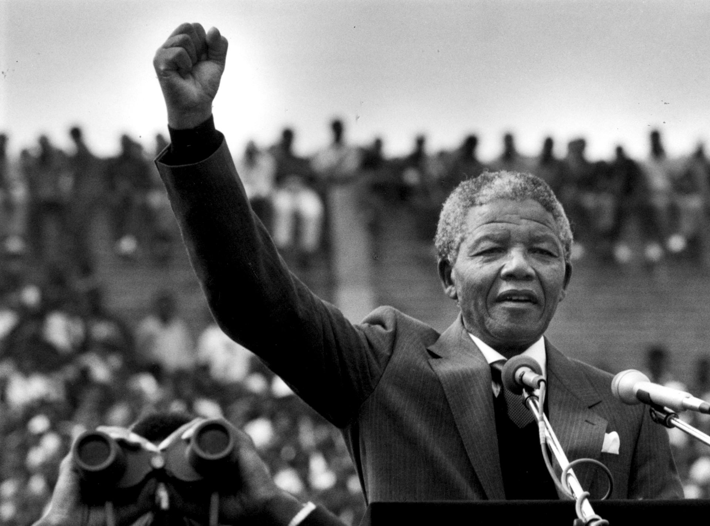

Nelson Rolihlahla Mandela (/mænˈdɛlə/; Xhosa: [xolíɬaɬa mandɛ̂ːla];
18 July 1918 – 5 December 2013) was a South African anti-apartheid
revolutionary, political leader and philanthropist who served as
President of South Africa from 1994 to 1999. He was the country's
first black head of state and the first elected in a fully
representative democratic election. His government focused on
dismantling the legacy of apartheid by tackling institutionalised
racism and fostering racial reconciliation. Ideologically an African
nationalist and socialist, he served as the president of the African
National Congress (ANC) party from 1991 to 1997.
A Xhosa speaker, Mandela was born to the Thembu royal family in
Mvezo, Union of South Africa. He studied law at the University of
Fort Hare and the University of Witwatersrand before working as a
lawyer in Johannesburg. There he became involved in anti-colonial
and African nationalist politics, joining the ANC in 1943 and
co-founding its Youth League in 1944. After the National Party's
white-only government established apartheid, a system of racial
segregation that privileged whites, he and the ANC committed
themselves to its overthrow. Mandela was appointed president of the
ANC's Transvaal branch, rising to prominence for his involvement in
the 1952 Defiance Campaign and the 1955 Congress of the People. He
was repeatedly arrested for seditious activities and was
unsuccessfully prosecuted in the 1956 Treason Trial. Influenced by
Marxism, he secretly joined the banned South African Communist Party
(SACP). Although initially committed to non-violent protest, in
association with the SACP he co-founded the militant Umkhonto we
Sizwe in 1961 and led a sabotage campaign against the government. He
was arrested and imprisoned in 1962, and subsequently sentenced to
life imprisonment for conspiring to overthrow the state following
the Rivonia Trial.
Mandela served 27 years in prison, split between Robben Island,
Pollsmoor Prison and Victor Verster Prison. Amid growing domestic
and international pressure, and with fears of a racial civil war,
President F. W. de Klerk released him in 1990. Mandela and de Klerk
led efforts to negotiate an end to apartheid, which resulted in the
1994 multiracial general election in which Mandela led the ANC to
victory and became president. Leading a broad coalition government
which promulgated a new constitution, Mandela emphasised
reconciliation between the country's racial groups and created the
Truth and Reconciliation Commission to investigate past human rights
abuses. Economically, Mandela's administration retained its
predecessor's liberal framework despite his own socialist beliefs,
also introducing measures to encourage land reform, combat poverty
and expand healthcare services. Internationally, he acted as
mediator in the Pan Am Flight 103 bombing trial and served as
secretary-general of the Non-Aligned Movement from 1998 to 1999. He
declined a second presidential term and was succeeded by his deputy,
Thabo Mbeki. Mandela became an elder statesman and focused on
combating poverty and HIV/AIDS through the charitable Nelson Mandela
Foundation.
Mandela was a controversial figure for much of his life. Although
critics on the right denounced him as a communist terrorist and
those on the far-left deemed him too eager to negotiate and
reconcile with apartheid's supporters, he gained international
acclaim for his activism. Widely regarded as an icon of democracy
and social justice, he received more than 250 honours, including the
Nobel Peace Prize. He is held in deep respect within South Africa,
where he is often referred to by his Thembu clan name, Madiba, and
described as the "Father of the Nation".

Early Life
Childhood: 1918–1934
Mandela was born on 18 July 1918 in the village of Mvezo in
Umtata, then part of South Africa's Cape Province. Given the
forename Rolihlahla, a Xhosa term colloquially meaning
"troublemaker", in later years he became known by his clan name,
Madiba. His patrilineal great-grandfather, Ngubengcuka, was king
of the Thembu people in the Transkeian Territories of South
Africa's modern Eastern Cape province. One of Ngubengcuka's
sons, named Mandela, was Nelson's grandfather and the source of
his surname. Because Mandela was the king's child by a wife of
the Ixhiba clan, a so-called "Left-Hand House", the descendants
of his cadet branch of the royal family were morganatic,
ineligible to inherit the throne but recognised as hereditary
royal councillors.
Nelson Mandela's father, Gadla Henry Mphakanyiswa Mandela
(1880–1928), was a local chief and councillor to the monarch; he
was appointed to the position in 1915, after his predecessor was
accused of corruption by a governing white magistrate. In 1926,
Gadla was also sacked for corruption, but Nelson was told that
his father had lost his job for standing up to the magistrate's
unreasonable demands. A devotee of the god Qamata, Gadla was a
polygamist with four wives, four sons and nine daughters, who
lived in different villages. Nelson's mother was Gadla's third
wife, Nosekeni Fanny, daughter of Nkedama of the Right Hand
House and a member of the amaMpemvu clan of the Xhosa.
Mandela later stated that his early life was dominated by
traditional Thembu custom and taboo. He grew up with two sisters
in his mother's kraal in the village of Qunu, where he tended
herds as a cattle-boy and spent much time outside with other
boys. Both his parents were illiterate, but being a devout
Christian, his mother sent him to a local Methodist school when
he was about seven. Baptised a Methodist, Mandela was given the
English forename of "Nelson" by his teacher. When Mandela was
about nine, his father came to stay at Qunu, where he died of an
undiagnosed ailment which Mandela believed to be lung disease.
Feeling "cut adrift", he later said that he inherited his
father's "proud rebelliousness" and "stubborn sense of
fairness".
Mandela's mother took him to the "Great Place" palace at
Mqhekezweni, where he was entrusted to the guardianship of the
Thembu regent, Chief Jongintaba Dalindyebo. Although he did not
see his mother again for many years, Mandela felt that
Jongintaba and his wife Noengland treated him as their own
child, raising him alongside their son, Justice, and daughter,
Nomafu. As Mandela attended church services every Sunday with
his guardians, Christianity became a significant part of his
life. He attended a Methodist mission school located next to the
palace, where he studied English, Xhosa, history and geography.
He developed a love of African history, listening to the tales
told by elderly visitors to the palace, and was influenced by
the anti-imperialist rhetoric of a visiting chief, Joyi. At the
time he nevertheless considered the European colonialists not as
oppressors but as benefactors who had brought education and
other benefits to southern Africa. Aged 16, he, Justice and
several other boys travelled to Tyhalarha to undergo the
ulwaluko circumcision ritual that symbolically marked their
transition from boys to men; afterwards he was given the name
Dalibunga.
Clarkebury, Healdtown, and Fort Hare: 1934–1940
Intending to gain skills needed to become a privy councillor for
the Thembu royal house, in 1933 Mandela began his secondary
education at Clarkebury Methodist High School in Engcobo, a
Western-style institution that was the largest school for black
Africans in Thembuland. Made to socialise with other students on
an equal basis, he claimed that he lost his "stuck up" attitude,
becoming best friends with a girl for the first time; he began
playing sports and developed his lifelong love of gardening. He
completed his Junior Certificate in two years, and in 1937 moved
to Healdtown, the Methodist college in Fort Beaufort attended by
most Thembu royalty, including Justice. The headmaster
emphasised the superiority of English culture and government,
but Mandela became increasingly interested in native African
culture, making his first non-Xhosa friend, a speaker of Sotho,
and coming under the influence of one of his favourite teachers,
a Xhosa who broke taboo by marrying a Sotho. Mandela spent much
of his spare time at Healdtown as a long-distance runner and
boxer, and in his second year he became a prefect.
With Jongintaba's backing, in 1939 Mandela began work on a BA
degree at the University of Fort Hare, an elite black
institution in Alice, Eastern Cape, with around 150 students.
There he studied English, anthropology, politics, native
administration, and Roman Dutch law in his first year, desiring
to become an interpreter or clerk in the Native Affairs
Department. Mandela stayed in the Wesley House dormitory,
befriending his own kinsman, K. D. Matanzima, as well as Oliver
Tambo, who became a close friend and comrade for decades to
come. He took up ballroom dancing, performed in a drama society
play about Abraham Lincoln, and gave Bible classes in the local
community as part of the Student Christian Association. Although
he had friends connected to the African National Congress (ANC)
who wanted South Africa to be independent of the British Empire,
Mandela avoided any involvement with the anti-imperialist
movement, and became a vocal supporter of the British war effort
when the Second World War broke out. He helped to found a
first-year students' house committee which challenged the
dominance of the second-years, and at the end of his first year
became involved in a Students' Representative Council (SRC)
boycott against the quality of food, for which he was suspended
from the university; he never returned to complete his degree.
Arriving in Johannesburg: 1941–1943
Returning to Mqhekezweni in December 1940, Mandela found that
Jongintaba had arranged marriages for him and Justice; dismayed,
they fled to Johannesburg via Queenstown, arriving in April
1941. Mandela found work as a night watchman at Crown Mines, his
"first sight of South African capitalism in action", but was
fired when the induna (headman) discovered that he was a
runaway. He stayed with a cousin in George Goch Township, who
introduced Mandela to realtor and ANC activist Walter Sisulu.
The latter secured Mandela a job as an articled clerk at the law
firm of Witkin, Sidelsky and Eidelman, a company run by Lazar
Sidelsky, a liberal Jew sympathetic to the ANC's cause. At the
firm, Mandela befriended Gaur Radebe—a Xhosa member of the ANC
and Communist Party—and Nat Bregman, a Jewish communist who
became his first white friend. Mandela attended Communist Party
gatherings, where he was impressed that Europeans, Africans,
Indians, and Coloureds mixed as equals. He later stated that he
did not join the party because its atheism conflicted with his
Christian faith, and because he saw the South African struggle
as being racially based rather than as class warfare. To
continue his higher education, Mandela signed up to a University
of South Africa correspondence course, working on his bachelor's
degree at night.
Earning a small wage, Mandela rented a room in the house of the
Xhoma family in the Alexandra township; despite being rife with
poverty, crime and pollution, Alexandra always remained a
special place for him. Although embarrassed by his poverty, he
briefly dated a Swazi woman before unsuccessfully courting his
landlord's daughter. To save money and be closer to downtown
Johannesburg, Mandela moved into the compound of the
Witwatersrand Native Labour Association, living among miners of
various tribes; as the compound was visited by various chiefs,
he once met the Queen Regent of Basutoland. In late 1941,
Jongintaba visited Johannesburg—there forgiving Mandela for
running away—before returning to Thembuland, where he died in
the winter of 1942. Mandela and Justice arrived a day late for
the funeral. After he passed his BA exams in early 1943, Mandela
returned to Johannesburg to follow a political path as a lawyer
rather than become a privy councillor in Thembuland. He later
stated that he experienced no epiphany, but that he "simply
found [himself] doing so, and could not do otherwise."
Revolutionary activity
Law studies and the ANC Youth League: 1943–1949
Mandela began studying law at the University of the
Witwatersrand, where he was the only black African student and
faced racism. There, he befriended liberal and communist
European, Jewish, and Indian students, among them Joe Slovo and
Ruth First. Becoming increasingly politicised, in August 1943
Mandela marched in support of a successful bus boycott to
reverse fare rises. Joining the ANC, he was increasingly
influenced by Sisulu, spending time with other activists at
Sisulu's Orlando house, including his old friend Oliver Tambo.
In 1943, Mandela met Anton Lembede, an ANC member affiliated
with the "Africanist" branch of African nationalism, which was
virulently opposed to a racially united front against
colonialism and imperialism or to an alliance with the
communists. Despite his friendships with non-blacks and
communists, Mandela embraced Lembede's views, believing that
black Africans should be entirely independent in their struggle
for political self-determination. Deciding on the need for a
youth wing to mass-mobilise Africans in opposition to their
subjugation, Mandela was among a delegation that approached ANC
President Alfred Bitini Xuma on the subject at his home in
Sophiatown; the African National Congress Youth League (ANCYL)
was founded on Easter Sunday 1944 in the Bantu Men's Social
Centre, with Lembede as president and Mandela as a member of its
executive committee.
At Sisulu's house, Mandela met Evelyn Mase, a trainee nurse and
ANC activist from Engcobo, Transkei. Entering a relationship and
marrying in October 1944, they initially lived with her
relatives until moving into a rented house in the township of
Orlando in early 1946. Their first child, Madiba "Thembi"
Thembekile, was born in February 1945; a daughter, Makaziwe, was
born in 1947 but died of meningitis nine months later. Mandela
enjoyed home life, welcoming his mother and his sister, Leabie,
to stay with him. In early 1947, his three years of articles
ended at Witkin, Sidelsky and Eidelman, and he decided to become
a full-time student, subsisting on loans from the Bantu Welfare
Trust.
In July 1947, Mandela rushed Lembede, who was ill, to hospital,
where he died; he was succeeded as ANCYL president by the more
moderate Peter Mda, who agreed to co-operate with communists and
non-blacks, appointing Mandela ANCYL secretary. Mandela
disagreed with Mda's approach, and in December 1947 supported an
unsuccessful measure to expel communists from the ANCYL,
considering their ideology un-African. In 1947, Mandela was
elected to the executive committee of the ANC's Transvaal
Province branch, serving under regional president C. S.
Ramohanoe. When Ramohanoe acted against the wishes of the
committee by co-operating with Indians and communists, Mandela
was one of those who forced his resignation.
In the South African general election in 1948, in which only
whites were permitted to vote, the Afrikaner-dominated Herenigde
Nasionale Party under Daniel François Malan took power, soon
uniting with the Afrikaner Party to form the National Party.
Openly racialist, the party codified and expanded racial
segregation with new apartheid legislation. Gaining increasing
influence in the ANC, Mandela and his party cadre allies began
advocating direct action against apartheid, such as boycotts and
strikes, influenced by the tactics already employed by South
Africa's Indian community. Xuma did not support these measures
and was removed from the presidency in a vote of no confidence,
replaced by James Moroka and a more militant executive committee
containing Sisulu, Mda, Tambo, and Godfrey Pitje. Mandela later
related that he and his colleagues had "guided the ANC to a more
radical and revolutionary path." Having devoted his time to
politics, Mandela failed his final year at Witwatersrand three
times; he was ultimately denied his degree in December 1949.
Defiance Campaign and Transvaal ANC Presidency: 1950–1954
Mandela took Xuma's place on the ANC national executive in March
1950, and that same year was elected national president of the
ANCYL. In March, the Defend Free Speech Convention was held in
Johannesburg, bringing together African, Indian, and communist
activists to call a May Day general strike in protest against
apartheid and white minority rule. Mandela opposed the strike
because it was multi-racial and not ANC-led, but a majority of
black workers took part, resulting in increased police
repression and the introduction of the Suppression of Communism
Act, 1950, affecting the actions of all protest groups. At the
ANC national conference of December 1951, he continued arguing
against a racially united front, but was outvoted.
Thereafter, Mandela rejected Lembede's Africanism and embraced
the idea of a multi-racial front against apartheid. Influenced
by friends like Moses Kotane and by the Soviet Union's support
for wars of national liberation, his mistrust of communism broke
down and he began reading literature by Karl Marx, Vladimir
Lenin, and Mao Zedong, eventually embracing the Marxist
philosophy of dialectical materialism. Commenting on communism,
he later stated that he "found [himself] strongly drawn to the
idea of a classless society which, to [his] mind, was similar to
traditional African culture where life was shared and communal."
In April 1952, Mandela began work at the H.M. Basner law firm,
which was owned by a communist, although his increasing
commitment to work and activism meant he spent less time with
his family.
In 1952, the ANC began preparation for a joint Defiance Campaign
against apartheid with Indian and communist groups, founding a
National Voluntary Board to recruit volunteers. The campaign was
designed to follow the path of nonviolent resistance influenced
by Mahatma Gandhi; some supported this for ethical reasons, but
Mandela instead considered it pragmatic. At a Durban rally on 22
June, Mandela addressed an assembled crowd of 10,000 people,
initiating the campaign protests for which he was arrested and
briefly interned in Marshall Square prison. These events
established Mandela as one of the best-known black political
figures in South Africa. With further protests, the ANC's
membership grew from 20,000 to 100,000 members; the government
responded with mass arrests and introduced the Public Safety
Act, 1953 to permit martial law. In May, authorities banned
Transvaal ANC President J. B. Marks from making public
appearances; unable to maintain his position, he recommended
Mandela as his successor. Although Africanists opposed his
candidacy, Mandela was elected to be regional president in
October.
In July 1952, Mandela was arrested under the Suppression of
Communism Act and stood trial as one of the 21 accused—among
them Moroka, Sisulu, and Yusuf Dadoo—in Johannesburg. Found
guilty of "statutory communism", a term that the government used
to describe most opposition to apartheid, their sentence of nine
months' hard labour was suspended for two years. In December,
Mandela was given a six-month ban from attending meetings or
talking to more than one individual at a time, making his
Transvaal ANC presidency impractical, and during this period the
Defiance Campaign petered out. In September 1953, Andrew Kunene
read out Mandela's "No Easy Walk to Freedom" speech at a
Transvaal ANC meeting; the title was taken from a quote by
Indian independence leader Jawaharlal Nehru, a seminal influence
on Mandela's thought. The speech laid out a contingency plan for
a scenario in which the ANC was banned. This Mandela Plan, or
M-Plan, involved dividing the organisation into a cell structure
with a more centralised leadership.
Mandela obtained work as an attorney for the firm Terblanche and
Briggish, before moving to the liberal-run Helman and Michel,
passing qualification exams to become a full-fledged attorney.
In August 1953, Mandela and Tambo opened their own law firm,
Mandela and Tambo, operating in downtown Johannesburg. The only
African-run law firm in the country, it was popular with
aggrieved blacks, often dealing with cases of police brutality.
Disliked by the authorities, the firm was forced to relocate to
a remote location after their office permit was removed under
the Group Areas Act; as a result, their clientele dwindled. As a
lawyer of aristocratic heritage, Mandela was part of
Johannesburg's elite black middle-class, and accorded much
respect from the black community. Although a second daughter,
Makaziwe Phumia, was born in May 1954, Mandela's relationship
with Evelyn became strained, and she accused him of adultery. He
may have had affairs with ANC member Lillian Ngoyi and secretary
Ruth Mompati; various individuals close to Mandela in this
period have stated that the latter bore him a child. Disgusted
by her son's behaviour, Nosekeni returned to Transkei, while
Evelyn embraced the Jehovah's Witnesses and rejected Mandela's
preoccupation with politics.
Congress of the People and the Treason Trial: 1955–1961
After taking part in the unsuccessful protest to prevent the
forced relocation of all black people from the Sophiatown suburb
of Johannesburg in February 1955, Mandela concluded that violent
action would prove necessary to end apartheid and white minority
rule. On his advice, Sisulu requested weaponry from the People's
Republic of China, which was denied. Although the Chinese
government supported the anti-apartheid struggle, they believed
the movement insufficiently prepared for guerrilla warfare. With
the involvement of the South African Indian Congress, the
Coloured People's Congress, the South African Congress of Trade
Unions and the Congress of Democrats, the ANC planned a Congress
of the People, calling on all South Africans to send in
proposals for a post-apartheid era. Based on the responses, a
Freedom Charter was drafted by Rusty Bernstein, calling for the
creation of a democratic, non-racialist state with the
nationalisation of major industry. The charter was adopted at a
June 1955 conference in Kliptown; 3,000 delegates attended the
event, which was forcibly closed down by police. The tenets of
the Freedom Charter remained important for Mandela, and in 1956
he described it as "an inspiration to the people of South
Africa".
Following the end of a second ban in September 1955, Mandela
went on a working holiday to Transkei to discuss the
implications of the Bantu Authorities Act, 1951 with local
tribal leaders, also visiting his mother and Noengland before
proceeding to Cape Town. In March 1956 he received his third ban
on public appearances, restricting him to Johannesburg for five
years, but he often defied it. Mandela's marriage broke down and
Evelyn left him, taking their children to live with her brother.
Initiating divorce proceedings in May 1956, she claimed that
Mandela had physically abused her; he denied the allegations,
and fought for custody of their children. She withdrew her
petition of separation in November, but Mandela filed for
divorce in January 1958; the divorce was finalised in March,
with the children placed in Evelyn's care. During the divorce
proceedings, he began courting a social worker, Winnie
Madikizela, whom he married in Bizana in June 1958. She later
became involved in ANC activities, spending several weeks in
prison. Together they had two children: Zenani, born in February
1959, and Zindziswa (1960–2020).
In December 1956, Mandela was arrested alongside most of the ANC
national executive, and accused of "high treason" against the
state. Held in Johannesburg Prison amid mass protests, they
underwent a preparatory examination before being granted bail.
The defence's refutation began in January 1957, overseen by
defence lawyer Vernon Berrangé, and continued until the case was
adjourned in September. In January 1958, Oswald Pirow was
appointed to prosecute the case, and in February the judge ruled
that there was "sufficient reason" for the defendants to go on
trial in the Transvaal Supreme Court. The formal Treason Trial
began in Pretoria in August 1958, with the defendants
successfully applying to have the three judges—all linked to the
governing National Party—replaced. In August, one charge was
dropped, and in October the prosecution withdrew its indictment,
submitting a reformulated version in November which argued that
the ANC leadership committed high treason by advocating violent
revolution, a charge the defendants denied.
In April 1959, Africanists dissatisfied with the ANC's united
front approach founded the Pan-Africanist Congress (PAC);
Mandela disagreed with the PAC's racially exclusionary views,
describing them as "immature" and "naïve". Both parties took
part in an anti-pass campaign in early 1960, in which Africans
burned the passes that they were legally obliged to carry. One
of the PAC-organised demonstrations was fired upon by police,
resulting in the deaths of 69 protesters in the Sharpeville
massacre. The incident brought international condemnation of the
government and resulted in rioting throughout South Africa, with
Mandela publicly burning his pass in solidarity.
Responding to the unrest, the government implemented state of
emergency measures, declaring martial law and banning the ANC
and PAC; in March, they arrested Mandela and other activists,
imprisoning them for five months without charge in the
unsanitary conditions of the Pretoria Local prison. Imprisonment
caused problems for Mandela and his co-defendants in the Treason
Trial; their lawyers could not reach them, and so it was decided
that the lawyers would withdraw in protest until the accused
were freed from prison when the state of emergency was lifted in
late August 1960. Over the following months, Mandela used his
free time to organise an All-In African Conference near
Pietermaritzburg, Natal, in March 1961, at which 1,400
anti-apartheid delegates met, agreeing on a stay-at-home strike
to mark 31 May, the day South Africa became a republic. On 29
March 1961, six years after the Treason Trial began, the judges
produced a verdict of not guilty, ruling that there was
insufficient evidence to convict the accused of "high treason",
since they had advocated neither communism nor violent
revolution; the outcome embarrassed the government.
MK, the SACP, and African tour: 1961–62
Disguised as a chauffeur, Mandela travelled around the country
incognito, organising the ANC's new cell structure and the
planned mass stay-at-home strike. Referred to as the "Black
Pimpernel" in the press—a reference to Emma Orczy's 1905 novel
The Scarlet Pimpernel—a warrant for his arrest was put out by
the police. Mandela held secret meetings with reporters, and
after the government failed to prevent the strike, he warned
them that many anti-apartheid activists would soon resort to
violence through groups like the PAC's Poqo. He believed that
the ANC should form an armed group to channel some of this
violence in a controlled direction, convincing both ANC leader
Albert Luthuli—who was morally opposed to violence—and allied
activist groups of its necessity.
Inspired by the actions of Fidel Castro's 26th of July Movement
in the Cuban Revolution, in 1961 Mandela, Sisulu, and Slovo
co-founded Umkhonto we Sizwe ("Spear of the Nation", abbreviated
MK). Becoming chairman of the militant group, Mandela gained
ideas from literature on guerrilla warfare by Marxist militants
Mao and Che Guevara as well as from the military theorist Carl
von Clausewitz. Although initially declared officially separate
from the ANC so as not to taint the latter's reputation, MK was
later widely recognised as the party's armed wing. Most early MK
members were white communists who were able to conceal Mandela
in their homes; after hiding in communist Wolfie Kodesh's flat
in Berea, Mandela moved to the communist-owned Liliesleaf Farm
in Rivonia, there joined by Raymond Mhlaba, Slovo, and
Bernstein, who put together the MK constitution. Although in
later life Mandela denied, for political reasons, ever being a
member of the Communist Party, historical research published in
2011 strongly suggested that he had joined in the late 1950s or
early 1960s. This was confirmed by both the SACP and the ANC
after Mandela's death. According to the SACP, he was not only a
member of the party, but also served on its Central Committee.
Operating through a cell structure, MK planned to carry out acts
of sabotage that would exert maximum pressure on the government
with minimum casualties; they sought to bomb military
installations, power plants, telephone lines, and transport
links at night, when civilians were not present. Mandela stated
that they chose sabotage because it was the least harmful
action, did not involve killing, and offered the best hope for
racial reconciliation afterwards; he nevertheless acknowledged
that should this have failed then guerrilla warfare might have
been necessary. Soon after ANC leader Luthuli was awarded the
Nobel Peace Prize, MK publicly announced its existence with 57
bombings on Dingane's Day (16 December) 1961, followed by
further attacks on New Year's Eve.
The ANC decided to send Mandela as a delegate to the February
1962 meeting of the Pan-African Freedom Movement for East,
Central and Southern Africa (PAFMECSA) in Addis Ababa, Ethiopia.
Leaving South Africa in secret via Bechuanaland, on his way
Mandela visited Tanganyika and met with its president, Julius
Nyerere. Arriving in Ethiopia, Mandela met with Emperor Haile
Selassie I, and gave his speech after Selassie's at the
conference. After the symposium, he travelled to Cairo, Egypt,
admiring the political reforms of President Gamal Abdel Nasser,
and then went to Tunis, Tunisia, where President Habib Bourguiba
gave him £5,000 for weaponry. He proceeded to Morocco, Mali,
Guinea, Sierra Leone, Liberia, and Senegal, receiving funds from
Liberian President William Tubman and Guinean President Ahmed
Sékou Touré. He left Africa for London, England, where he met
anti-apartheid activists, reporters, and prominent politicians.
Upon returning to Ethiopia, he began a six-month course in
guerrilla warfare, but completed only two months before being
recalled to South Africa by the ANC's leadership.
Imprisonment
Arrest and Rivonia trial: 1962–1964
On 5 August 1962, police captured Mandela along with fellow
activist Cecil Williams near Howick. Many MK members suspected
that the authorities had been tipped off with regard to
Mandela's whereabouts, although Mandela himself gave these ideas
little credence. In later years, Donald Rickard, a former
American diplomat revealed that the Central Intelligence Agency,
who feared Mandela's associations with communists, had informed
the South African police of his location. Jailed in
Johannesburg's Marshall Square prison, Mandela was charged with
inciting workers' strikes and leaving the country without
permission. Representing himself with Slovo as legal advisor,
Mandela intended to use the trial to showcase "the ANC's moral
opposition to racism" while supporters demonstrated outside the
court. Moved to Pretoria, where Winnie could visit him, he began
correspondence studies for a Bachelor of Laws (LLB) degree from
the University of London International Programmes. His hearing
began in October, but he disrupted proceedings by wearing a
traditional kaross, refusing to call any witnesses, and turning
his plea of mitigation into a political speech. Found guilty, he
was sentenced to five years' imprisonment; as he left the
courtroom, supporters sang "Nkosi Sikelel iAfrika".
On 11 July 1963, police raided Liliesleaf Farm, arresting those
they found there and uncovering paperwork documenting MK's
activities, some of which mentioned Mandela. The Rivonia Trial
began at Pretoria Supreme Court in October, with Mandela and his
comrades charged with four counts of sabotage and conspiracy to
violently overthrow the government; their chief prosecutor was
Percy Yutar. Judge Quartus de Wet soon threw out the
prosecution's case for insufficient evidence, but Yutar
reformulated the charges, presenting his new case from December
1963 until February 1964, calling 173 witnesses and bringing
thousands of documents and photographs to the trial.
On 11 July 1963, police raided Liliesleaf Farm, arresting those
they found there and uncovering paperwork documenting MK's
activities, some of which mentioned Mandela. The Rivonia Trial
began at Pretoria Supreme Court in October, with Mandela and his
comrades charged with four counts of sabotage and conspiracy to
violently overthrow the government; their chief prosecutor was
Percy Yutar. Judge Quartus de Wet soon threw out the
prosecution's case for insufficient evidence, but Yutar
reformulated the charges, presenting his new case from December
1963 until February 1964, calling 173 witnesses and bringing
thousands of documents and photographs to the trial.
Although four of the accused denied involvement with MK, Mandela
and the other five accused admitted sabotage but denied that
they had ever agreed to initiate guerrilla war against the
government. They used the trial to highlight their political
cause; at the opening of the defence's proceedings, Mandela gave
his three-hour "I Am Prepared to Die" speech. That speech—which
was inspired by Castro's "History Will Absolve Me"—was widely
reported in the press despite official censorship. The trial
gained international attention; there were global calls for the
release of the accused from the United Nations and World Peace
Council, while the University of London Union voted Mandela to
its presidency. On 12 June 1964, justice De Wet found Mandela
and two of his co-accused guilty on all four charges; although
the prosecution had called for the death sentence to be applied,
the judge instead condemned them to life imprisonment.
Robben Island: 1964–1982
In 1964, Mandela and his co-accused were transferred from
Pretoria to the prison on Robben Island, remaining there for the
next 18 years. Isolated from non-political prisoners in Section
B, Mandela was imprisoned in a damp concrete cell measuring 8
feet (2.4 m) by 7 feet (2.1 m), with a straw mat on which to
sleep. Verbally and physically harassed by several white prison
wardens, the Rivonia Trial prisoners spent their days breaking
rocks into gravel, until being reassigned in January 1965 to
work in a lime quarry. Mandela was initially forbidden to wear
sunglasses, and the glare from the lime permanently damaged his
eyesight. At night, he worked on his LLB degree which he was
obtaining from the University of London through a correspondence
course with Wolsey Hall, Oxford, but newspapers were forbidden,
and he was locked in solitary confinement on several occasions
for the possession of smuggled news clippings. He was initially
classified as the lowest grade of prisoner, Class D, meaning
that he was permitted one visit and one letter every six months,
although all mail was heavily censored.
The political prisoners took part in work and hunger strikes—the
latter considered largely ineffective by Mandela—to improve
prison conditions, viewing this as a microcosm of the
anti-apartheid struggle. ANC prisoners elected him to their
four-man "High Organ" along with Sisulu, Govan Mbeki, and
Raymond Mhlaba, and he involved himself in a group representing
all political prisoners (including Eddie Daniels) on the island,
Ulundi, through which he forged links with PAC and Yu Chi Chan
Club members. Initiating the "University of Robben Island",
whereby prisoners lectured on their own areas of expertise, he
debated socio-political topics with his comrades
Though attending Christian Sunday services, Mandela studied
Islam. He also studied Afrikaans, hoping to build a mutual
respect with the warders and convert them to his cause. Various
official visitors met with Mandela, most significantly the
liberal parliamentary representative Helen Suzman of the
Progressive Party, who championed Mandela's cause outside of
prison. In September 1970, he met British Labour Party
politician Denis Healey. South African Minister of Justice Jimmy
Kruger visited in December 1974, but he and Mandela did not get
along with each other. His mother visited in 1968, dying shortly
after, and his firstborn son Thembi died in a car accident the
following year; Mandela was forbidden from attending either
funeral. His wife was rarely able to see him, being regularly
imprisoned for political activity, and his daughters first
visited in December 1975. Winnie was released from prison in
1977 but was forcibly settled in Brandfort and remained unable
to see him.
From 1967 onwards, prison conditions improved; black prisoners
were given trousers rather than shorts, games were permitted,
and the standard of their food was raised. In 1969, an escape
plan for Mandela was developed by Gordon Bruce, but it was
abandoned after the conspiracy was infiltrated by an agent of
the South African Bureau of State Security (BOSS), who hoped to
see Mandela shot during the escape. In 1970, Commander Piet
Badenhorst became commanding officer. Mandela, seeing an
increase in the physical and mental abuse of prisoners,
complained to visiting judges, who had Badenhorst reassigned. He
was replaced by Commander Willie Willemse, who developed a
co-operative relationship with Mandela and was keen to improve
prison standards
By 1975, Mandela had become a Class A prisoner, which allowed
him greater numbers of visits and letters. He corresponded with
anti-apartheid activists like Mangosuthu Buthelezi and Desmond
Tutu. That year, he began his autobiography, which was smuggled
to London, but remained unpublished at the time; prison
authorities discovered several pages, and his LLB study
privileges were revoked for four years. Instead, he devoted his
spare time to gardening and reading until the authorities
permitted him to resume his LLB degree studies in 1980.
By the late 1960s, Mandela's fame had been eclipsed by Steve
Biko and the Black Consciousness Movement (BCM). Seeing the ANC
as ineffectual, the BCM called for militant action, but
following the Soweto uprising of 1976, many BCM activists were
imprisoned on Robben Island. Mandela tried to build a
relationship with these young radicals, although he was critical
of their racialism and contempt for white anti-apartheid
activists. Renewed international interest in his plight came in
July 1978, when he celebrated his 60th birthday. He was awarded
an honorary doctorate in Lesotho, the Jawaharlal Nehru Award for
International Understanding in India in 1979, and the Freedom of
the City of Glasgow, Scotland in 1981. In March 1980, the slogan
"Free Mandela!" was developed by journalist Percy Qoboza,
sparking an international campaign that led the UN Security
Council to call for his release. Despite increasing foreign
pressure, the government refused, relying on its Cold War allies
US President Ronald Reagan and UK Prime Minister Margaret
Thatcher; both considered Mandela's ANC a terrorist organisation
sympathetic to communism, and supported its suppression.
Pollsmoor Prison: 1982–1988
In April 1982, Mandela was transferred to Pollsmoor Prison in
Tokai, Cape Town, along with senior ANC leaders Walter Sisulu,
Andrew Mlangeni, Ahmed Kathrada, and Raymond Mhlaba; they
believed that they were being isolated to remove their influence
on younger activists at Robben Island. Conditions at Pollsmoor
were better than at Robben Island, although Mandela missed the
camaraderie and scenery of the island. Getting on well with
Pollsmoor's commanding officer, Brigadier Munro, Mandela was
permitted to create a roof garden; he also read voraciously and
corresponded widely, now permitted 52 letters a year. He was
appointed patron of the multi-racial United Democratic Front
(UDF), founded to combat reforms implemented by South African
President P. W. Botha. Botha's National Party government had
permitted Coloured and Indian citizens to vote for their own
parliaments, which had control over education, health, and
housing, but black Africans were excluded from the system; like
Mandela, the UDF saw this as an attempt to divide the
anti-apartheid movement on racial lines.
The early 1980s witnessed an escalation of violence across the
country, and many predicted civil war. This was accompanied by
economic stagnation as various multinational banks—under
pressure from an international lobby—had stopped investing in
South Africa. Numerous banks and Thatcher asked Botha to release
Mandela—then at the height of his international fame—to defuse
the volatile situation. Although considering Mandela a dangerous
"arch-Marxist", in February 1985 Botha offered him a release
from prison if he "unconditionally rejected violence as a
political weapon". Mandela spurned the offer, releasing a
statement through his daughter Zindzi stating, "What freedom am
I being offered while the organisation of the people [ANC]
remains banned? Only free men can negotiate. A prisoner cannot
enter into contracts.
In 1985, Mandela underwent surgery on an enlarged prostate
gland, before being given new solitary quarters on the ground
floor. He was met by "seven eminent persons", an international
delegation sent to negotiate a settlement, but Botha's
government refused to co-operate, calling a state of emergency
in June and initiating a police crackdown on unrest. The
anti-apartheid resistance fought back, with the ANC committing
231 attacks in 1986 and 235 in 1987. The violence escalated as
the government used the army and police to combat the
resistance, and provided covert support for vigilante groups and
the Zulu nationalist movement Inkatha, which was involved in an
increasingly violent struggle with the ANC. Mandela requested
talks with Botha but was denied, instead secretly meeting with
Minister of Justice Kobie Coetsee in 1987, and having a further
11 meetings over the next three years. Coetsee organised
negotiations between Mandela and a team of four government
figures starting in May 1988; the team agreed to the release of
political prisoners and the legalisation of the ANC on the
condition that they permanently renounce violence, break links
with the Communist Party, and not insist on majority rule.
Mandela rejected these conditions, insisting that the ANC would
end its armed activities only when the government renounced
violence.
Mandela's 70th birthday in July 1988 attracted international
attention, including a tribute concert at London's Wembley
Stadium that was televised and watched by an estimated 200
million viewers. Although presented globally as a heroic figure,
he faced personal problems when ANC leaders informed him that
Winnie had set herself up as head of a gang, the "Mandela United
Football Club", which had been responsible for torturing and
killing opponents—including children—in Soweto. Though some
encouraged him to divorce her, he decided to remain loyal until
she was found guilty by trial.
Victor Verster Prison and release: 1988–1990
Recovering from tuberculosis exacerbated by the damp conditions
in his cell, in December 1988, Mandela was moved to Victor
Verster Prison near Paarl. He was housed in the relative comfort
of a warder's house with a personal cook, and he used the time
to complete his LLB degree. While there, he was permitted many
visitors and organised secret communications with exiled ANC
leader Oliver Tambo.
In 1989, Botha suffered a stroke; although he would retain the
state presidency, he stepped down as leader of the National
Party, to be replaced by F. W. de Klerk. In a surprise move,
Botha invited Mandela to a meeting over tea in July 1989, an
invitation Mandela considered genial. Botha was replaced as
state president by de Klerk six weeks later; the new president
believed that apartheid was unsustainable and released a number
of ANC prisoners. Following the fall of the Berlin Wall in
November 1989, de Klerk called his cabinet together to debate
legalising the ANC and freeing Mandela. Although some were
deeply opposed to his plans, de Klerk met with Mandela in
December to discuss the situation, a meeting both men considered
friendly, before legalising all formerly banned political
parties in February 1990 and announcing Mandela's unconditional
release. Shortly thereafter, for the first time in 20 years,
photographs of Mandela were allowed to be published in South
Africa.
Leaving Victor Verster Prison on 11 February, Mandela held
Winnie's hand in front of amassed crowds and the press; the
event was broadcast live across the world. Driven to Cape Town's
City Hall through crowds, he gave a speech declaring his
commitment to peace and reconciliation with the white minority,
but he made it clear that the ANC's armed struggle was not over
and would continue as "a purely defensive action against the
violence of apartheid". He expressed hope that the government
would agree to negotiations, so that "there may no longer be the
need for the armed struggle", and insisted that his main focus
was to bring peace to the black majority and give them the right
to vote in national and local elections. Staying at Tutu's home,
in the following days Mandela met with friends, activists, and
press, giving a speech to an estimated 100,000 people at
Johannesburg's FNB Stadium.
End of apartheid
Early negotiations: 1990–91
Mandela proceeded on an African tour, meeting supporters and
politicians in Zambia, Zimbabwe, Namibia, Libya and Algeria, and
continuing to Sweden, where he was reunited with Tambo, and
London, where he appeared at the Nelson Mandela: An
International Tribute for a Free South Africa concert at Wembley
Stadium. Encouraging foreign countries to support sanctions
against the apartheid government, he met President François
Mitterrand in France, Pope John Paul II in the Vatican, and
Thatcher in the United Kingdom. In the United States, he met
President George H.W. Bush, addressed both Houses of Congress
and visited eight cities, being particularly popular among the
African-American community. In Cuba, he became friends with
President Castro, whom he had long admired. He met President R.
Venkataraman in India, President Suharto in Indonesia, Prime
Minister Mahathir Mohamad in Malaysia, and Prime Minister Bob
Hawke in Australia. He visited Japan, but not the Soviet Union,
a longtime ANC supporter.
In May 1990, Mandela led a multiracial ANC delegation into
preliminary negotiations with a government delegation of 11
Afrikaner men. Mandela impressed them with his discussions of
Afrikaner history, and the negotiations led to the Groot Schuur
Minute, in which the government lifted the state of emergency.
In August, Mandela—recognising the ANC's severe military
disadvantage—offered a ceasefire, the Pretoria Minute, for which
he was widely criticised by MK activists. He spent much time
trying to unify and build the ANC, appearing at a Johannesburg
conference in December attended by 1600 delegates, many of whom
found him more moderate than expected. At the ANC's July 1991
national conference in Durban, Mandela admitted that the party
had faults and announced his aim to build a "strong and
well-oiled task force" for securing majority rule. At the
conference, he was elected ANC President, replacing the ailing
Tambo, and a 50-strong multiracial, mixed gendered national
executive was elected.
Mandela was given an office in the newly purchased ANC
headquarters at Shell House, Johannesburg, and moved into
Winnie's large Soweto home. Their marriage was increasingly
strained as he learned of her affair with Dali Mpofu, but he
supported her during her trial for kidnapping and assault. He
gained funding for her defence from the International Defence
and Aid Fund for Southern Africa and from Libyan leader Muammar
Gaddafi, but in June 1991 she was found guilty and sentenced to
six years in prison, reduced to two on appeal. On 13 April 1992,
Mandela publicly announced his separation from Winnie. The ANC
forced her to step down from the national executive for
misappropriating ANC funds; Mandela moved into the mostly white
Johannesburg suburb of Houghton. Mandela's prospects for a
peaceful transition were further damaged by an increase in
"black-on-black" violence, particularly between ANC and Inkatha
supporters in KwaZulu-Natal, which resulted in thousands of
deaths. Mandela met with Inkatha leader Buthelezi, but the ANC
prevented further negotiations on the issue. Mandela argued that
there was a "third force" within the state intelligence services
fuelling the "slaughter of the people" and openly blamed de
Klerk—whom he increasingly distrusted—for the Sebokeng massacre.
In September 1991, a national peace conference was held in
Johannesburg at which Mandela, Buthelezi and de Klerk signed a
peace accord, though the violence continued.
CODESA talks: 1991–92
The Convention for a Democratic South Africa (CODESA) began in
December 1991 at the Johannesburg World Trade Centre, attended
by 228 delegates from 19 political parties. Although Cyril
Ramaphosa led the ANC's delegation, Mandela remained a key
figure, and after de Klerk used the closing speech to condemn
the ANC's violence, he took to the stage to denounce de Klerk as
the "head of an illegitimate, discredited minority regime".
Dominated by the National Party and ANC, little negotiation was
achieved. CODESA 2 was held in May 1992, at which de Klerk
insisted that post-apartheid South Africa must use a federal
system with a rotating presidency to ensure the protection of
ethnic minorities; Mandela opposed this, demanding a unitary
system governed by majority rule. Following the Boipatong
massacre of ANC activists by government-aided Inkatha militants,
Mandela called off the negotiations, before attending a meeting
of the Organisation of African Unity in Senegal, at which he
called for a special session of the UN Security Council and
proposed that a UN peacekeeping force be stationed in South
Africa to prevent "state terrorism". Calling for domestic mass
action, in August the ANC organised the largest-ever strike in
South African history, and supporters marched on Pretoria.
Following the Bisho massacre, in which 28 ANC supporters and one
soldier were shot dead by the Ciskei Defence Force during a
protest march, Mandela realised that mass action was leading to
further violence and resumed negotiations in September. He
agreed to do so on the conditions that all political prisoners
be released, that Zulu traditional weapons be banned, and that
Zulu hostels would be fenced off, the latter two measures
intended to prevent further Inkatha attacks; de Klerk
reluctantly agreed. The negotiations agreed that a multiracial
general election would be held, resulting in a five-year
coalition government of national unity and a constitutional
assembly that gave the National Party continuing influence. The
ANC also conceded to safeguarding the jobs of white civil
servants; such concessions brought fierce internal criticism.
The duo agreed on an interim constitution based on a liberal
democratic model, guaranteeing separation of powers, creating a
constitutional court, and including a US-style bill of rights;
it also divided the country into nine provinces, each with its
own premier and civil service, a concession between de Klerk's
desire for federalism and Mandela's for unitary government.
The democratic process was threatened by the Concerned South
Africans Group (COSAG), an alliance of black ethnic-secessionist
groups like Inkatha and far-right Afrikaner parties; in June
1993, one of the latter—the Afrikaner Weerstandsbeweging
(AWB)—attacked the Kempton Park World Trade Centre. Following
the murder of ANC activist Chris Hani, Mandela made a publicised
speech to calm rioting, soon after appearing at a mass funeral
in Soweto for Tambo, who had died of a stroke. In July 1993,
both Mandela and de Klerk visited the US, independently meeting
President Bill Clinton and each receiving the Liberty Medal.
Soon after, Mandela and de Klerk were jointly awarded the Nobel
Peace Prize in Norway. Influenced by Thabo Mbeki, Mandela began
meeting with big business figures, and played down his support
for nationalisation, fearing that he would scare away
much-needed foreign investment. Although criticised by socialist
ANC members, he had been encouraged to embrace private
enterprise by members of the Chinese and Vietnamese Communist
parties at the January 1992 World Economic Forum in Switzerland.
General election: 1994
With the election set for 27 April 1994, the ANC began
campaigning, opening 100 election offices and orchestrating
People's Forums across the country at which Mandela could
appear, as a popular figure with great status among black South
Africans. The ANC campaigned on a Reconstruction and Development
Programme (RDP) to build a million houses in five years,
introduce universal free education and extend access to water
and electricity. The party's slogan was "a better life for all",
although it was not explained how this development would be
funded. With the exception of the Weekly Mail and the New
Nation, South Africa's press opposed Mandela's election, fearing
continued ethnic strife, instead supporting the National or
Democratic Party. Mandela devoted much time to fundraising for
the ANC, touring North America, Europe and Asia to meet wealthy
donors, including former supporters of the apartheid regime. He
also urged a reduction in the voting age from 18 to 14; rejected
by the ANC, this policy became the subject of ridicule.
Concerned that COSAG would undermine the election, particularly
in the wake of the conflict in Bophuthatswana and the Shell
House massacre—incidents of violence involving the AWB and
Inkatha, respectively—Mandela met with Afrikaner politicians and
generals, including P. W. Botha, Pik Botha and Constand Viljoen,
persuading many to work within the democratic system. With de
Klerk, he also convinced Inkatha's Buthelezi to enter the
elections rather than launch a war of secession. As leaders
of the two major parties, de Klerk and Mandela appeared on a
televised debate; although de Klerk was widely considered the
better speaker at the event, Mandela's offer to shake his hand
surprised him, leading some commentators to deem it a victory
for Mandela. The election went ahead with little violence,
although an AWB cell killed 20 with car bombs. As widely
expected, the ANC won a sweeping victory, taking 63% of the
vote, just short of the two-thirds majority needed to
unilaterally change the constitution. The ANC was also
victorious in seven provinces, with Inkatha and the National
Party each taking one. Mandela voted at the Ohlange
High School in Durban, and though the ANC's victory assured his
election as president, he publicly accepted that the election
had been marred by instances of fraud and sabotage.